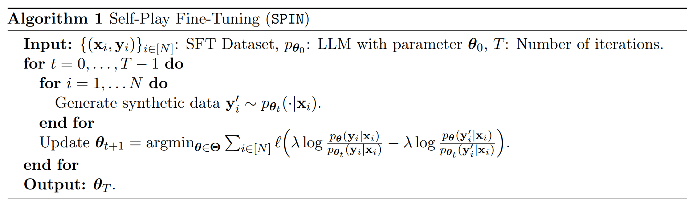

Harnessing the power of human-annotated data through Supervised Fine-Tuning (SFT) is pivotal for advancing Large Language Models (LLMs). In this paper, we delve into the prospect of growing a strong LLM out of a weak one without the need for acquiring additional human-annotated data. We propose a new fine-tuning method called Self-Play fIne-tuNing (SPIN), which starts from a supervised fine-tuned model. At the heart of SPIN lies a self-play mechanism, where the LLM refines its capability by playing against instances of itself. More specifically, the LLM generates its own training data from its previous iterations, refining its policy by discerning these self-generated responses from those obtained from human-annotated data. Our method progressively elevates the LLM from a nascent model to a formidable one, unlocking the full potential of human-annotated demonstration data for SFT. Theoretically, we prove that the global optimum to the training objective function of our method is achieved only when the LLM policy aligns with the target data distribution. Empirically, we evaluate our method on several benchmark datasets including the HuggingFace Open LLM Leaderboard, MT-Bench, and datasets from Big-Bench. Our results show that SPIN can significantly improve the LLM's performance across a variety of benchmarks and even outperform models trained through direct preference optimization (DPO) supplemented with extra GPT-4 preference data. This sheds light on the promise of self-play, enabling the achievement of human-level performance in LLMs without the need for expert opponents

Our study focuses on fine-tuning LLMs without the need for additional human-annotated data beyond the fine-tuning dataset. Specifically, we consider following question: Can we empower a weak LLM to improve itself without acquiring additional human annotated data? In this paper, we answer this question affirmatively. Inspired by the success of self-play mechanisms in games, we propose to convert a weak LLM to a strong one through the lens of self-play, where the model is enhanced by playing against itself without requiring any direct supervision. In particular, we propose a novel fine-tuning method called Self-Play fIne-tuNing (SPIN), which begins from a supervised fine-tuned model.

In this study, we adopt zephyr-7b-sft-full as our base model. This model derives from the pre-trained Mistral-7B and has been further fine-tuned on the SFT dataset Ultrachat200k1 by HuggingFace. From UltraChat200k, We randomly sample 50k prompts and use the base model to generate the synthetic responses. We evaluate SPIN on a wide range of benchmarks, including the HuggingFace Open LLM Leaderboard, MT-Bench, and datasets from Big-Bench. Our findings highlight several key points:


@misc{chen2024selfplay,
title={Self-Play Fine-Tuning Converts Weak Language Models to Strong Language Models},
author={Zixiang Chen and Yihe Deng and Huizhuo Yuan and Kaixuan Ji and Quanquan Gu},
year={2024},
eprint={2401.01335},
archivePrefix={arXiv},
primaryClass={cs.LG}
}